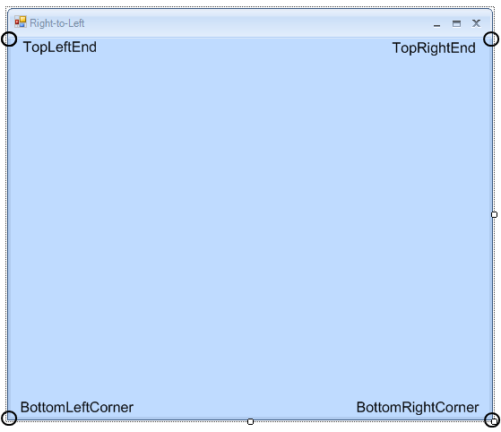
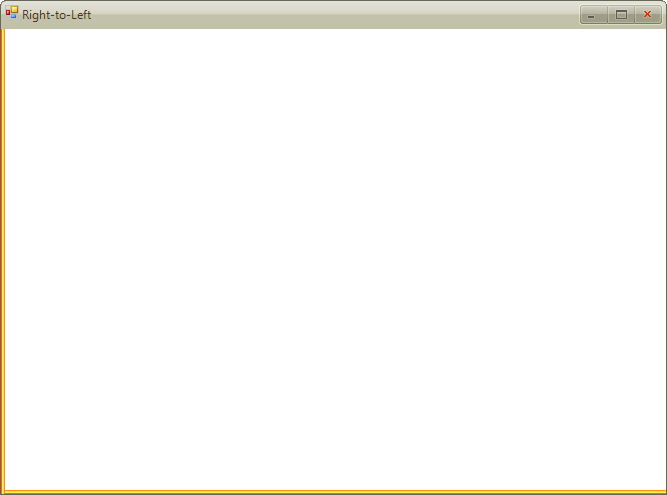
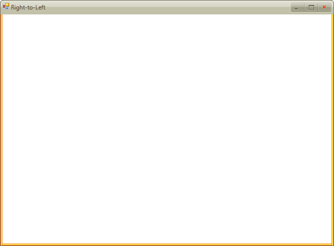

Using the FormImageBorderPrimitive
The __FormImageBorderPrimitive__allows you to customize the appearance of your __RadForm__by creating custom borders built of images. In this way you can easily create stylish visual effects and professional look-and-feel for your __RadForm__control.
The following topic describes how the __FormImageBorderPrimitive__works and demonstrates how to create a form with image borders.
Utilizing the FormImageBorderPrimitive
The __FormImageBorderPrimitive__exposes the following properties which are used to define the separate images which build the border:
TopLeftEnd
LeftTexture
BottomLeftCorner
BottomTexture
BottomRightCorner
RightTexture
TopRightEnd
The following picture shows the positions at which the images appear:
The LeftTexture, BottomTexture__and __RightTexture__are drawn as textures between the __TopLeftEnd and BottomLeftCorner, BottomLeftCorner and BottomRightCorner, BottomRightCorner and TopRightEnd respectively. The TopLeftEnd__and the __TopRightEnd images are used to define a smooth transition between the image border and the RadFormTitleBarElement. The __BottomLeftCorner__and __BottomRightCorner__properties are used to set the images which are drawn in the corners of the form's border.
It is important to know that setting one of the following properties does not cause any parts of the __FormImageBorderPrimitive__to be drawn:
TopLeftEnd
BottomRightCorner
BottomLeftCorner
TopRightEnd
The minimum requirement for parts of the border to be drawn is setting one of the following properties:
LeftTexture
BottomTexture
RightTexture
Here is how the __RadForm__control looks when the __LeftTexture__property is set with the following image:

After setting the __BottomTexture__property with the following image:
The __RightTexture__property with the following image:

The __BottomLeftCorner__and __BottomRightCorner__properties with the corresponding images:

 The parts used to build the Image Border of the form are scaled for the purpose of the topic.
The parts used to build the Image Border of the form are scaled for the purpose of the topic.
The __TopLeftEnd__and __TopRightEnd__images are not obligatory as well as the __BottomLeftCorner__and __BottomRightCorner__images. However, they are needed for creating a more complete image border design for your __RadForm__control.You can set images for the FormImageBorderPrimitive in the Visual Style Builder as a part of a theme for the __RadForm__control.